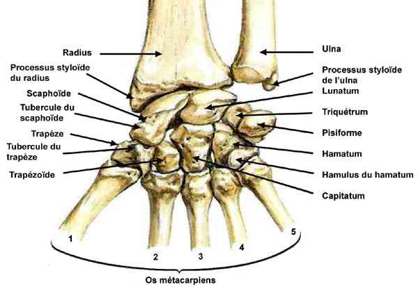
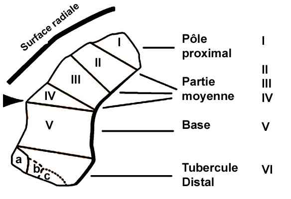

Bienvenue Sur Medical Education
Fractures : os du carpe
Spécialité : traumatologie /
Points importants
-
Malgré une meilleure connaissance de ces lésions et l'amélioration croissante des procédés d'imagerie, ces fractures sont encore souvent découvertes et traitées avec retard
-
Examen radiologique d'excellente qualité indispensable devant le risque d'arthrose si diagnostic passé inaperçu
-
Fracture luxation transcaphopérilunaire du carpe : pathologie rare et grave du sujet jeune
-
Fracture du scaphoïde carpien est toujours articulaire car recouvert par du cartilage sur la quasi totalité de la surface
Rappel anatomique
 _585 Anatomie du carpe
-
Carpe composé de huit os, deux rangées, trois colonnes :
-
rangée proximale (de dehors en dedans) :
- 1. scaphoïde carpien (75,5%)
- 2. lunatum (4,6%) : fractures de la corne antérieure et postérieure, lésions d'arrachement ligamentaire et les fractures du corps
- 3. triquetrum (11,5%) : fractures de la corne postérieure et fractures du corps secondaire à un arrachement ligamentaire (doit faire rechercher des lésions ligamentaires associées et en particulier l'articulation scapholunaire)
- 4. pisiforme (fracture exceptionnelle et sans conséquence car non articulaire)
-
rangée distale (de dehors en dedans) :
- 1. trapèze (3%) souvent associée à une fracture de Bennet articulaire de la base du premier métacarpien
- 2. trapézoïde (0,2%)
- 3. capitatum (1,9%) : souvent associée à une luxation périlunaire ou à une fracture du scaphoïde (syndrome de Fenton)
- 4. hamatum (1,7%) : fracture de l'apophyse unciforme de l'hamatum ou fracture du corps
-
rangée proximale (de dehors en dedans) :
Présentation clinique / CIMU
SIGNES FONCTIONNELS
-
Douleurs spontanées et provoquées de la base du pouce : fracture du scaphoïde
-
Œdème de la tabatière anatomique : fracture du scaphoïde
-
Douleurs sur les bords ulnaires du poignet: fracture de l'os pisiforme
-
Douleur et oedème de la tabatière anatomique avec pouce en adduction ± saillie dorsale à la base du pouce : fracture du trapèze parfois associée à une fracture de la styloïde radiale
CONTEXTE
Terrain
- Adultes
- Masculin
Circonstances de survenue
- Accident de haute énergie : fracture luxation transcaphopérilunaire du carpe
-
Mouvement d'hyperextension du poignet :
- fracture du capitatum
- fracture du pisiforme
- Joueurs de golf, tennis, baseball, squash : fracture de l'hamatum
- Traumatisme en écrasement de la paume : fracture extra-articulaire du trapèze
- Mouvement brutal en extension du poignet et inclinaison radiale, le talon de la main étant en appui
EXAMEN CLINIQUE
_918
- - -
Examen clinique de la main
Fractures du scaphoïde carpien
Fractures du lunatum
Fractures du triquetrum
Fractures du trapèze
Fractures de l'hamatum
Radiographie
TDM
Fracture du scaphoïde carpien

_586
Fractures du scaphoïde carpien
_882
- - -
Gantelet plâtré prenant P1
Fracture luxation trans- scaphopérilunaire du carpe : traitement chirurgical
Fractures du lunatum
Fractures du triquetrum (pyramidal)
Fractures du pisiforme
Fractures du trapèze
Fractures du trapézoïde
Fractures du capitatum
Fractures de l'hamatum
_874
- - -
Manchette antébrachiale
Auteur(s) : Alexandra ATLAN
CIMU
Signes paracliniques
BIOLOGIQUES
IMAGERIE
Traitement
STABILISATION INITIALE
SUIVI DU TRAITEMENT
MEDICAMENTS
Surveillance
CLINIQUE
PARACLINIQUE
Devenir / orientation
CRITERES D ADMISSION
CRITERES DE SORTIE
ORDONNANCE DE SORTIE
RECOMMANDATIONS DE SORTIE
Mécanisme / description
Bibliographie